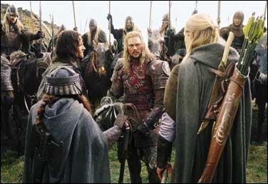
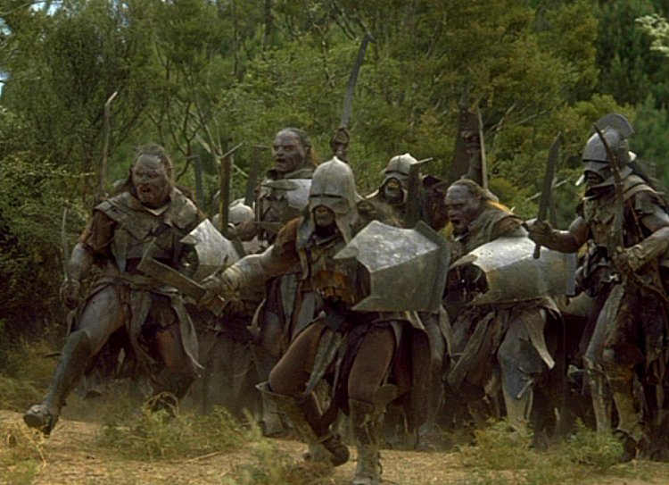
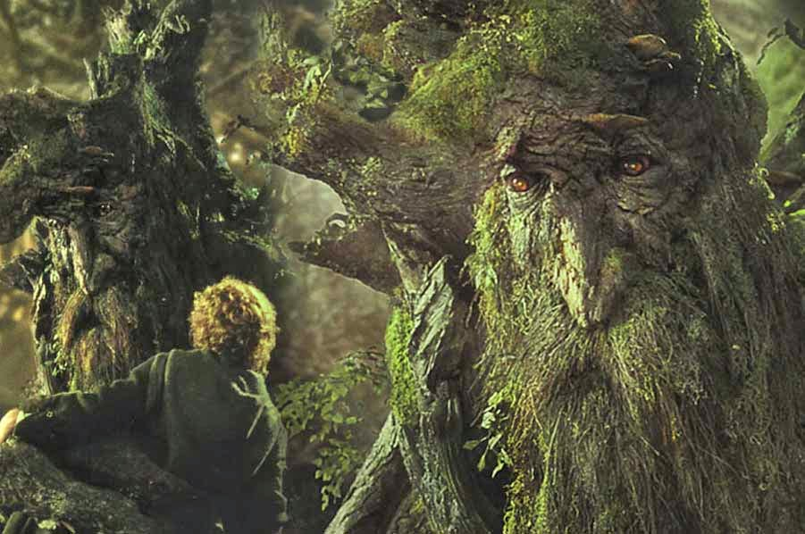
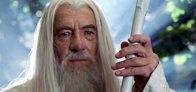
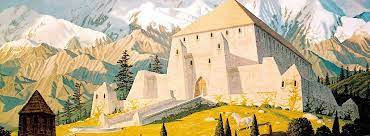
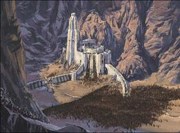
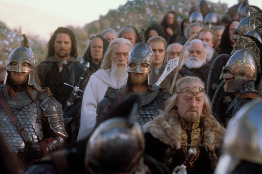
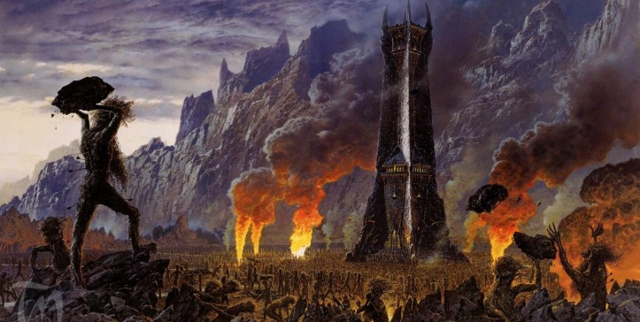
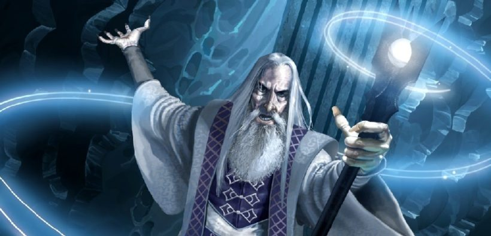

Aragorn sigue el camino de Frodo hasta la cima de Amon Hen. Allí oye el sonido del cuerno de Boromir en medio de los gritos de muchos orcos, y corre para ayudarle. Llega demasiado tarde: Boromir ha sido alcanzado por varias flechas y se está muriendo. En sus últimas palabras le confiesa a Aragorn lo sucedido con Frodo y le advierte que los orcos han capturado a los otros hobbits. Gimli y Legolas vuelven poco después, y juntos llevan el cuerpo de Boromir a una barca, dejando que esta viaje río abajo.
Descubren que un barco y el equipaje de Sam han desaparecido, y deducen que Frodo y Sam deben de haber cruzado el Anduin en dirección a Mordor mientras todos los demás estaban buscando Frodo. Deciden no seguirlos ya que quizá ahora se encuentren demasiado lejos. Aragorn decide seguir a los orcos para intentar rescatar a Merry y a Pippin. Empiezan la persecución enseguida y a gran velocidad, ya que los orcos les han tomado una ventaja de varias horas.
Aragorn, Gimli y Legolas continúan su persecución durante tres días corriendo a gran velocidad a través de la tierra de Rohan, pero parece que los orcos apenas descansan, y su ventaja aumenta cada vez más. Al cuarto día se encuentran una compañía de Rohirrim, los Hombres de Rohan, dirigidos por Éomer, el Tercer Mariscal de la Marca y sobrino de Théoden, el Rey de Rohan.
Aragorn les explica el propósito de su caza y Éomer les dice que mataron a esos orcos dos días antes, pero que no encontraron ningún hobbit entre los cadáveres. Intercambian algunas noticias y Éomer queda impresionado cuando Aragorn le habla del trayecto recorrido y con la rapidez con que se desplazan. Les da permiso para viajar a través de Rohan, y les da caballos de repuesto.
Aragorn, Gimli y Legolas continúan su camino y alcanzan el lugar de la batalla, cerca de los límites del gran bosque de Fangorn. No encuentran ningún rastro de los hobbits. Esa noche un anciano aparece y desaparece rápidamente cerca de su campamento, y sus caballos huyen; sospechan que el hombre podría ser el mago Saruman.
Pippin y Merry siguen apresados por los orcos. Estos tienen órdenes de no matar a los cautivos. Durante algún tiempo, los orcos los llevan a cuestas, pero luego son obligados a correr, con la única ayuda de un extraño licor que los fortalece durante algún tiempo.
La banda de los orcos está compuesta por tipos diferentes: un pequeño grupo de las Montañas Nubladas, algunos orcos de Mordor, dirigidos por Grishnákh, y los grandes Uruk-hai de Isengard, dirigidos por un capitán llamado Uglúk. Empiezan las discusiones cuando se plantea a dónde se deben llevar los prisioneros, y la palabra de Uglúk prevalece y continúan el viaje hacia Isengard.
Por la tarde, cerca de Fangorn, son rodeados por un grupo de Jinetes de Rohan. Los Jinetes lanzan tímidos ataques y esperan al alba antes del ataque final. Por la noche, Grishnákh va a donde estaban los hobbits para encontrar el Anillo y quedárselo él. Los coge e intenta escapar con ellos, pero es descubierto y abatido por los Jinetes. Los hobbits se arrastran inadvertidos hacia bosque. Al alba los Jinetes atacan el campamento orco, muriendo todos en la batalla.
Merry y Pippin continúan adentrándose en el bosque, y pronto se encuentran con Bárbol el Ent. Los ents son criaturas extrañas, altas y muy viejas cuya apariencia se parece a la de los árboles. Hablan sobre muchas cosas: los hobbits le dicen a Bárbol los percances de su viaje, y este les habla sobre los Ents, su historia y el Bosque de Fangorn.
Los ents están amenazados por Saruman cuyos orcos están destruyendo el bosque y talando árboles innecesariamente. Bárbol siente que ya es hora de hacer algo al respecto, y los ents se reúnen en la Cámara de los Ents, donde debaten este problema. Puesto que los ents no son criaturas apresuradas, la asamblea dura dos días y dos noches, pero al final deciden atacar Isengard. Bárbol se lleva a los hobbits en su marcha, y muchos ents se unen a ellos.
Aragorn, Legolas y Gimli investigan el lugar de la batalla a la mañana siguiente, y encuentran una hoja de mallorn y algunas migas de lembas. Con esta evidencia de la presencia de los hobbits, continúan su búsqueda en el bosque de Fangorn y alcanzan la colina donde los hobbits se habían encontrado a Bárbol.
Entonces se encuentran a un anciano que confunden al principio con Saruman, pero en realidad no es otro que Gandalf que ha derrotado al Balrog y ha vuelto ahora más poderoso que nunca, vistiendo una túnica blanca.
Gandalf les informa que los hobbits se encontraron con Bárbol y que los ents están marchando hacia Isengard; les aconseja ir a Rohan y ayudar en la guerra que se está fraguando allí. Llama a su caballo, Sombragrís, al que acompañan los caballos de Aragorn y Legolas, huidos la noche anterior. Gandalf y los tres compañeros cabalgan en dirección a Edoras, la corte de Théoden, el Rey de Rohan.
En Meduseld, el castillo de rey Théoden, no son bien recibidos, y se les exige dejar sus armas fuera antes de ver al rey. Théoden está bajo la influencia de su consejero Gríma, también llamado Lengua de Serpiente, quien lo ha convencido de que Gandalf siempre es una señal de problemas, y no debe ser bienvenido.
Gandalf impone silencio a Lengua de Serpiente con un hechizo de relámpago, y lleva al rey fuera, al aire fresco y a la luz del día. Aquí Théoden comprende que las venenosas palabras de Gríma le hacían sentirse más viejo y más débil de lo que realmente era, y abre su corazón al consejo de Gandalf .
Prepara a los Rohirrim para partir enseguida al oeste, hacia Isengard, pasando primero por el Abismo de Helm. Lengua de Serpiente se opone a esto, pero Gandalf lo revela como el espía de Saruman; Théoden le da la opción de unirse a la guerra o irse para siempre, y Gríma huye a caballo.
El rey agasaja con regalos a los compañeros: permite a Gandalf montar a Sombragrís y da una armadura excelente a Aragorn, Legolas y Gimli. Finalmente el rey marcha hacia la batalla, y Éowyn, la hermana de Éomer, se queda para gobernar al resto de las personas de Rohan en la ausencia del rey.
Gandalf se va hacia Isengard a más velocidad que el resto del ejército del rey, que se dirige al Abismo de Helm, una fortaleza en las montañas. Allí, en la torre de Cuernavilla, la morada de Erkenbrand, el amo del Folde Este, varios Rohirrim de esa región ya habían buscado refugio. El rey entra en el Abismo de Helm y se prepara para la defensa.
Son atacados por un gran ejército de orcos y dunlendinos, y a pesar del valor de los defensores, estos deben retirarse a Cuernavilla y sus cuevas. Al alba del día siguiente, Théoden ataca con firmeza y los orcos, desmoralizados, huyen ante él. Al mismo tiempo Gandalf aparece junto a Erkenbrand y su ejército. Los orcos son rodeados, e intentan escapar por el bosque de ucornos que ha aparecido delante de la fortaleza, aunque sin éxito, pues ninguno consigue salir vivo del bosque.
Gandalf, Aragorn, Gimli, Legolas, Théoden, Éomer, y una parte del ejército rohirrim, parten hacia Isengard. Gimli le habla a Legolas sobre la belleza de las Cavernas de Aglarond, y deciden que algún día volverán juntos y verán ambos el Bosque de Fangorn y las Cavernas de Aglarond. La compañía viaja a través del bosque de los ents y pasan por un gran montículo de tierra donde se enterraron los rohirrim que cayeron en las batallas anteriores. Por la noche ven una gran sombra que vuela hacia Isengard.
Finalmente alcanzan el Anillo de Isengard, donde Saruman tenía su morada desde hacía largo tiempo, convirtiéndola en una gran fortaleza, Orthanc. Pero ahora ha sido derrotado por los ents. En las puertas encuentran a Merry y Pippin, disfrutando de una gran comilona con vino y tabaco para pipa. Estos dirigen a Gandalf y a Théoden hacia la pared norte, donde pueden encontrar a Bárbol.
Entretanto Aragorn, Legolas y Gimli se quedan con los dos hobbits que les cuentan sus aventuras desde la ruptura de la Comunidad del Anillo: el viaje con los orcos, la reunión con Bárbol y el ataque de los ents a Isengard.
A los ents no le afectan apenas las flechas o hachas, y gracias a eso han destrozado las puertas y muros de Isengard; pero les resulta imposible dañar la torre de Orthanc, así que Saruman está encerrado en la torre. Los Ucornos han formado un bosque alrededor de Isengard, donde todos los orcos que huyen de Isengard son atrapados allí. Los ents han construido diques y han excavado trincheras, y han dirigido el agua del río Isen hacia Isengard, donde han inundado las cuevas subterráneas y sofocado los fuegos de Saruman.
Merry y Pippin siguen contando que Gandalf llegó allí a pedir ayuda, de ahí el bosque de ucornos que apareció frente al Abismo de Helm, y Lengua de Serpiente llegó más tarde y pretendió pasar por el mensajero de Théoden. Bárbol, a quien Gandalf había advertido sobre Gríma, le dio la opción de entrar en Orthanc o esperar la llegada de Théoden, pero este vadeó los charcos y las lagunas y entró en la torre.
Gandalf, Théoden, Éomer, Aragorn, Gimli y Legolas llegan hasta los escalones de Orthanc para hablar con Saruman, mientras los otros esperan un poco más alejados. Saruman tiene una voz dulce e hipnótica que puede influir a muchos fácilmente.
Se dirige a Théoden primero y propone paz y alianza entre Isengard y Rohan prometiendo grandes beneficios. Su voz encanta a los Jinetes, y parece que convence a Théoden también, pero entonces este se niega y Saruman monta en cólera, pero consigue calmarse.
Entonces Saruman habla con Gandalf e intenta convencerlo de unirse y usar su poder y sabiduría para gobernar las tierras. Gandalf se ríe de esto y entonces le da una ultima oportunidad a Saruman para bajar y ayudarlos en su causa, o permanecer encerrado con llave en Orthanc. Saruman rechaza esta oferta, y Gandalf da por finalizada la conversación y lo expulsa de la orden de los Istari.
Un globo de cristal lanzado por Gríma cae desde una de las ventana. Gandalf lo toma e indica que podría ser un objeto de gran importancia. La compañía dice adiós a Bárbol, que promete que los ents guardarán Orthanc e impedirán a Saruman escapar.
La compañía decide volver a Edoras. En una de las acampadas, Pippin siente curiosidad sobre la esfera de cristal que había recogido. Por la noche, cuando todos duermen, la toma de debajo del brazo de Gandalf. No puede resistirse, y cuando piensa que ya está lejos, mira la bola, y al rato cae al suelo con un grito.
Gandalf le pregunta lo que ha visto y hecho mientras miraba en la piedra: ha visto la Torre Oscura, y ha sido interrogado por un siervo de Sauron. El siervo creyó que la piedra todavía estaba en Orthanc, y que el hobbit era el prisionero de Saruman, Sólo le dió un recado a Pippin: decirle a Saruman que entregara al prisionero a Mordor.
La piedra resulta ser un palantír, una de las siete piedras usadas por los reyes antiguos que utilizaban para comunicarse con los lugares lejanos; así Saruman podía hablar con el Señor Oscuro. Una sombra pasa por encima del campamento: es uno de los Espectros del Anillo que está montado ahora en una criatura alada horrible, y parece dirigirse a Isengard. Gandalf decide adelantarse a los otros partiendo inmediatamente con Pippin montados en Sombragrís, en dirección a Minas Tirith tan rápido como sea posible.
Continúa en El retorno del rey...